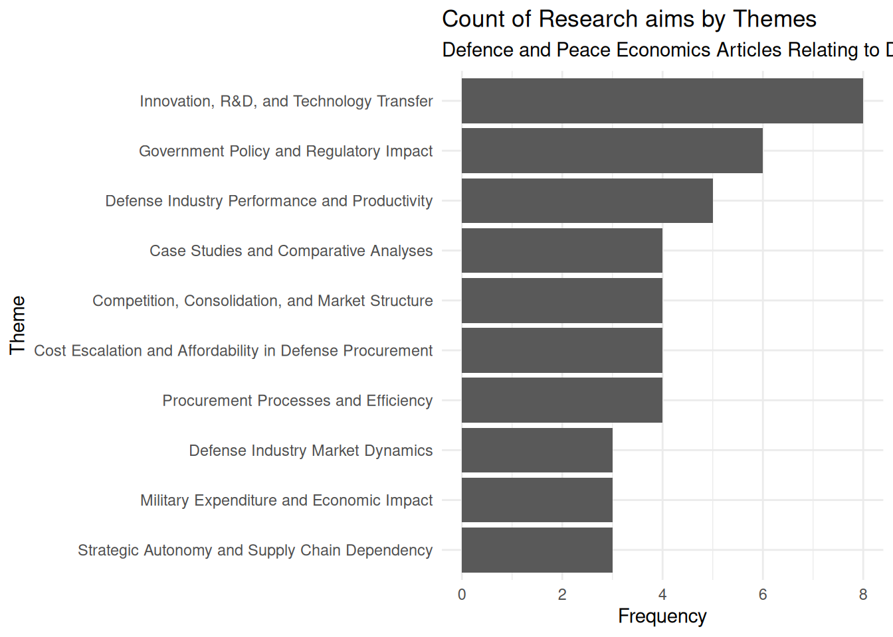

library(ellmer)
library(dpe)Run setup_python_env() before running `py_pdf_blocks` or `py_count_tokens`.library(rcrossref)
data(dpe_summary)library(ellmer)
library(dpe)Run setup_python_env() before running `py_pdf_blocks` or `py_count_tokens`.library(rcrossref)
data(dpe_summary)topic <- "Defence Industries & Industrial Base"
dib_df <- dpe_summary |>
dplyr::filter(primary_theme == topic | secondary_theme == topic)What are the key themes in the research aims across the literature?
system_prompt = "You are an English academic research assistant."
chat <- chat_openai(system_prompt = system_prompt)
aims <- dib_df |>
dplyr::pull(aims) |>
paste(collapse = "\n")
schema <- ellmer::type_object(
.description = glue::glue(
"Extract the key themes and their descriptions from",
"a list of __research aims__relating to {topic}.",
"The different research aims are delimited by \n.",
.sep = " "
),
key_themes = type_array(
description = "Extract the key themes from the research aims",
items = type_string()
),
key_themes_description = type_array(
description = "Provide a description of the key theme including topics and keywords",
items = type_string()
)
)
results <- chat$chat_structured(aims, type = schema)
results_df <- results |>
dplyr::as_tibble()schema <- ellmer::type_object(
.description = "Classify the provided research aim as belonging to a given theme",
primary_theme = ellmer::type_enum(
description = paste(
"Select the single most appropriate main theme from: ",
paste(paste(results_df$key_themes, results_df$key_themes_description, sep = ": "), collapse = "\n")
),
values = as.character(results_df$key_themes)
),
secondary_theme = ellmer::type_enum(
description = paste(
"Optionally, select the single most appropriate main theme from: ",
paste(paste(results_df$key_themes, results_df$key_themes_description, sep = ": "), collapse = "\n"),
"Otherwise return Null"
),
values = as.character(results_df$key_themes),
required = FALSE
),
)
chat <- chat_openai(system_prompt = system_prompt)
txt_list <- purrr::map(dib_df$aims, ~.x)
theme_mapping <- ellmer::parallel_chat_structured(
chat,
txt_list,
type = schema
)
aims_themes <- dplyr::tibble(doi = dib_df$doi, aims = dib_df$aims) |>
dplyr::bind_cols(theme_mapping)
write.csv(aims_themes, "dib_aims_themes.csv", row.names = FALSE)library(ggplot2)
dib_aims_themes <- readr::read_csv("dib_aims_themes.csv")Rows: 44 Columns: 4
── Column specification ────────────────────────────────────────────────────────
Delimiter: ","
chr (4): doi, aims, primary_theme, secondary_theme
ℹ Use `spec()` to retrieve the full column specification for this data.
ℹ Specify the column types or set `show_col_types = FALSE` to quiet this message.theme_count <- dib_aims_themes |>
dplyr::select(doi, primary_theme) |>
dplyr::group_by(primary_theme) |>
dplyr::count(sort = TRUE)
ggplot(theme_count) +
geom_bar(
aes(factor(primary_theme, rev(theme_count$primary_theme)), n),
stat = "identity"
) +
coord_flip() +
theme_minimal() +
labs(
x = "Theme",
y = "Frequency",
title = "Count of Research aims by Themes",
subtitle = "Defence and Peace Economics Articles Relating to Defence Industrial Base (2020-2024)"
)
This code chunk:
dib_df <- dib_aims_themes |>
dplyr::select(doi, sub_theme_primary = primary_theme) |>
dplyr::left_join(dib_df, by = "doi") |>
dplyr::arrange(sub_theme_primary)bibtex <- cr_cn(dib_df$doi)
bibtex_ref <- purrr::map_chr(
.x = bibtex,
.f = ~paste0("@",stringr::str_match(.x, "@article\\{([^,]+),")[,2])
)
bibtex_df <- dplyr::tibble(
bibtex_citation_key = bibtex_ref,
bibtex_citation = unlist(bibtex)
)
dib_with_citation <- dib_df |>
dplyr::bind_cols(bibtex_df)yaml_list <- dib_with_citation |>
dplyr::select(
sub_theme_primary,
doi,
aims:conclusions,
bibtex_citation_key
) |>
tidyr::pivot_longer(-c(doi, sub_theme_primary)) |>
dplyr::group_by(sub_theme_primary) |>
dplyr::group_map(
~{.x |>
dplyr::group_by(doi) |>
dplyr::group_map(~{
as.list(tibble::deframe(.x))
})
})
names(yaml_list) <- dib_df |>
dplyr::distinct(sub_theme_primary) |>
dplyr::arrange() |>
dplyr::pull()
yaml_list <- yaml_list |>
purrr::map(~yaml::as.yaml(.x))library(ellmer)
system_prompt = "You are an English academic research assistant. Output responses in UK British English."
chat <- chat_openai(system_prompt = system_prompt)
schema <- type_object(
.description = "Create a literature review based on the provided data",
lit_review = type_string(
description = "Summarise the aims, finding and conclusions from the provided yaml text. Use the 'bibtex_citation_key' to cite the source, in the format (e.g., @Smith2022). Do not generate your own references. Only use the citation_key provided."
)
)
lit_review <- parallel_chat_structured(chat, yaml_list, schema)
write.csv(lit_review, "lit_review_out.csv", row.names = FALSE)lit_review <- readr::read_csv("lit_review_out.csv")Rows: 10 Columns: 1
── Column specification ────────────────────────────────────────────────────────
Delimiter: ","
chr (1): lit_review
ℹ Use `spec()` to retrieve the full column specification for this data.
ℹ Specify the column types or set `show_col_types = FALSE` to quiet this message.lit_review_text <- lit_review |>
dplyr::mutate(sub_theme_primary = dib_df |>
dplyr::distinct(sub_theme_primary) |>
dplyr::arrange() |>
dplyr::pull()) |>
dplyr::as_tibble() |>
dplyr::left_join(
dib_df |>
dplyr::group_by(sub_theme_primary) |>
dplyr::count(),
by = "sub_theme_primary"
) |>
dplyr::arrange(-n) |>
purrr::pmap(function(sub_theme_primary, lit_review, ...){
glue::glue("# {sub_theme_primary}\n\n {lit_review}")
}) |>
unlist() |>
paste(collapse = "\n\n")lit_review_md <- glue::glue(
"---",
"title: 'Defence Industrial Base'",
"bibliography: references.bib",
"---\n",
"{lit_review_text}",
"# Reference",
.sep = "\n"
)
write(lit_review_md, "defence-lit-review.qmd")bibtex |> unlist() |> paste(collapse = "\n\n") |>
write("references.bib")